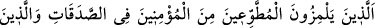

3. Cimrilik ve dünyaya olan hırs kötülenmektedir.
Bir hadiste şöyle buyurulmuştur: “Üç sınıf insan vardır ki Allah ve Rasûlü onları
sevmez. Onlar Allah’ın, meleklerin ve bütün insanların lanetine uğramışlardır. Onlar
cimri, kibirli ve pis boğaz kimselerdir.”[212]
Başka bir hadiste ise şöyle buyurulmuştur: “Kıyamet gününde fakirlerden dolayı vay
zenginlerin haline! Fakirler, onlar hakkında: “Ey Rabbimiz! Onlara bize verilmek
üzere farz kıldığın haklarımızı vermediler.” derler. Bunun üzerine Allah Teâlâ: “İzzet
ve Celâlim için onları uzaklaştıracağım, sizi ise yaklaştıracağım.” buyurur.”[213]
Hâfız der ki:
Hâlâ kahırdan yere batmakta olan Kârun hazinesi
Okumuşsundur, fakirlerin kahrı yüzündendir.
Yine bir başka hadiste şöyle buyurulmuştur: “Allah’ın velî kulu, ancak cömertlik
üzere yaratılmıştır.”[214]
Cömertlerin en cömerdi ise Allah Teâlâ’dır. Bütün kâinâta varlık elbisesini hiçbir
karşılık beklemeden nasıl giydirdiğini ve onlara gizli-açık her türlü nimeti nasıl ihsan
eylediğini görmez misin?! Yarattıklarını şehvetler gibi tehlikelerden men etmiş, bunu da
cimriliğinden değil, bilakis onları kalıcı lezzetlere yöneltmek için yapmıştır.
79. Sadaka vermekte gönülden davranan müminlere dil uzatan ve ancak
ellerinden geldiği kadar verebilenlerle alay eden kimselerle Allah alay etmiştir.
Onlara can yakıcı azap vardır.
“Sadaka vermekte gönülden davranan” gönüllü olarak nâfile sadaka veren
“müminlere dil uzatan” ayıplayıp onların gıybetini yapan “ve ancak ellerinden geldiği
kadar verebilenlerle alay eden kimselerle” münâfıklarla “Allah alay etmiştir.” yani
alay etmeleri üzerine Allah onları cezalandırmıştır. Alay etmenin karşılığının alay
etmek olarak isimlendirilmesi, edebî san’atlardan “müşâkele” (Bir kelimenin aynı
cümle içerisinde iki ayrı mânâsını kullanarak yapılan kelime oyunu) türündendir. Çünkü
“Allah alay etmiştir” ifâdesi, “alay eden kimselerle” ifadesi ile birlikte kullanılmıştır.
Rivayet edildiğine göre Peygamber Efendimiz (s.a.) Tebük gazvesine çıkmak istediği
zaman ashâbına hitaben bir konuşma yaptı ve onları orduyu techiz etmeleri için infaka